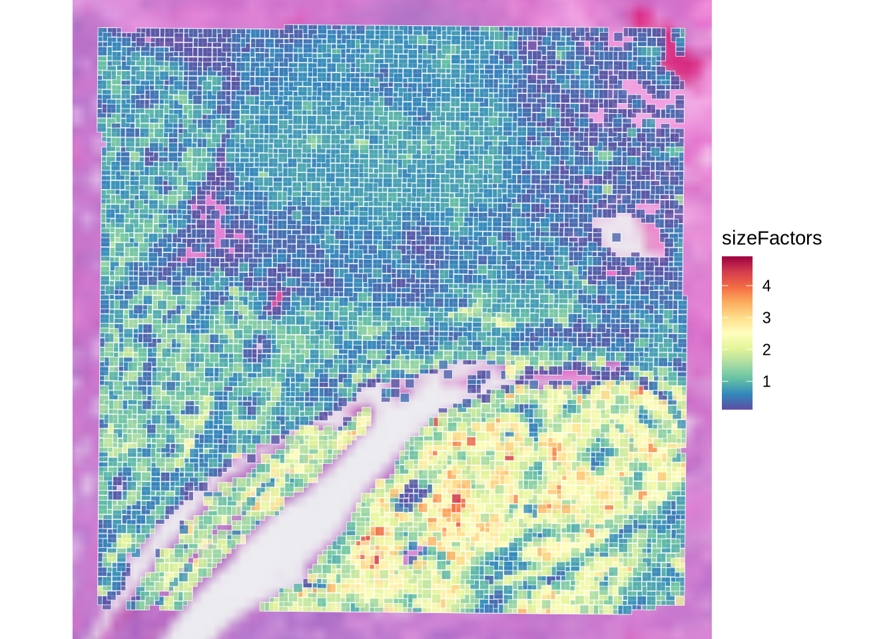
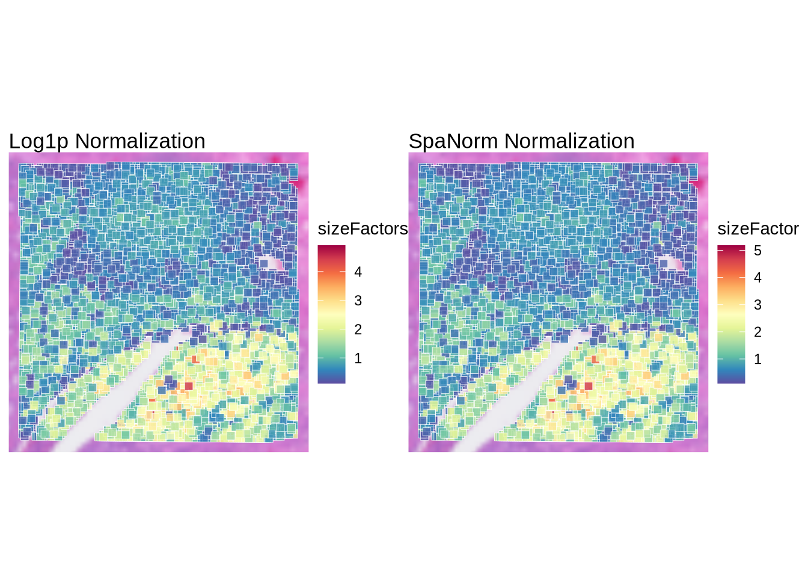
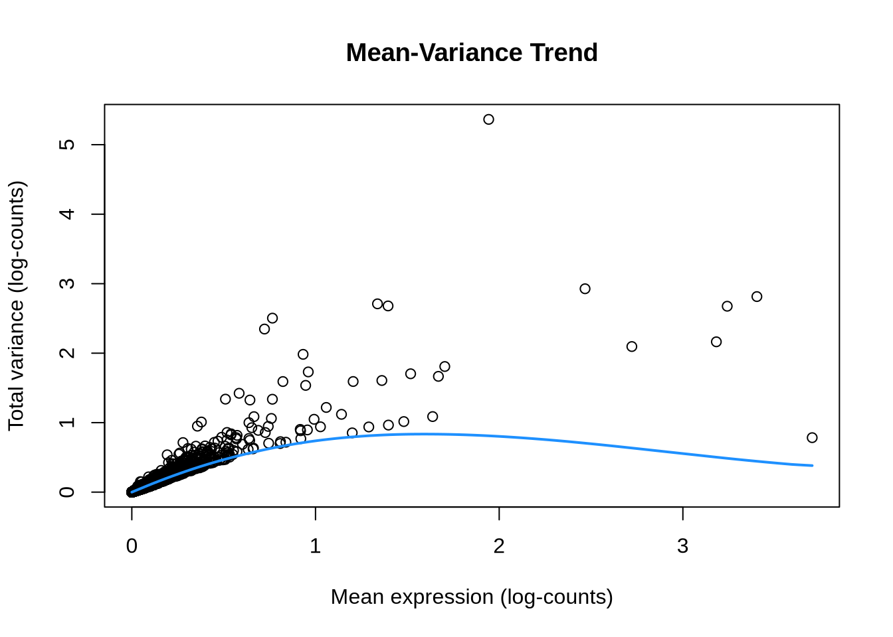
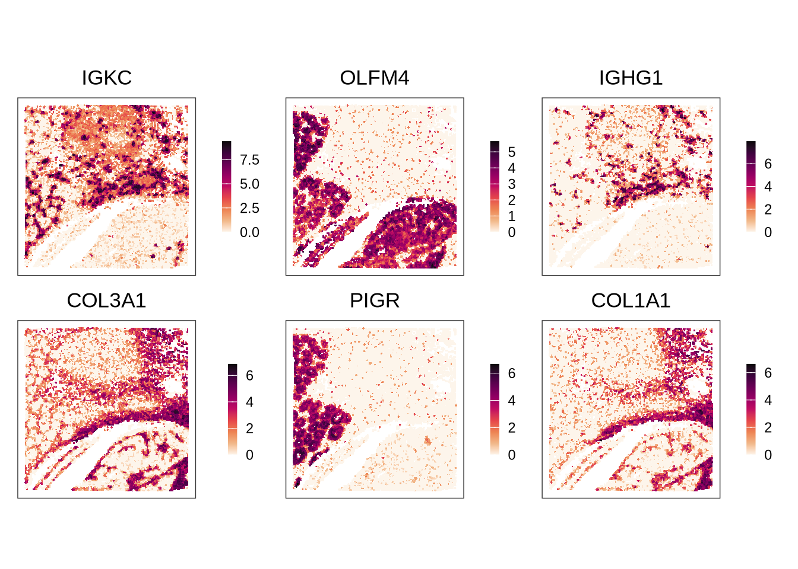
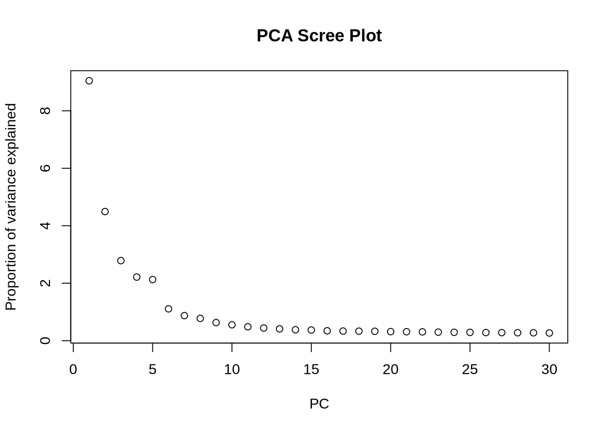
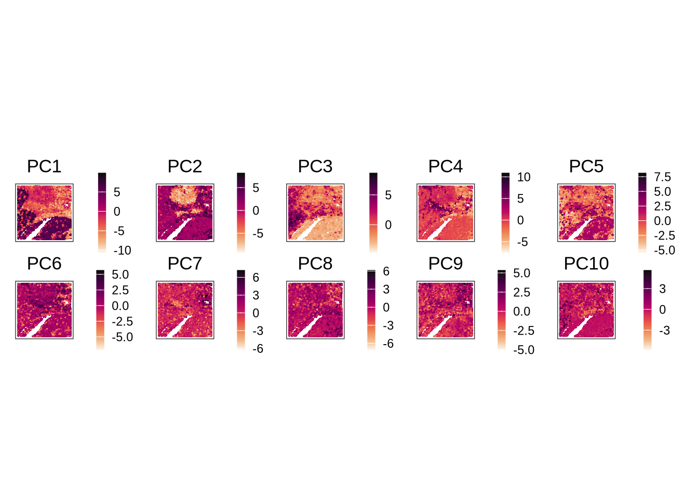
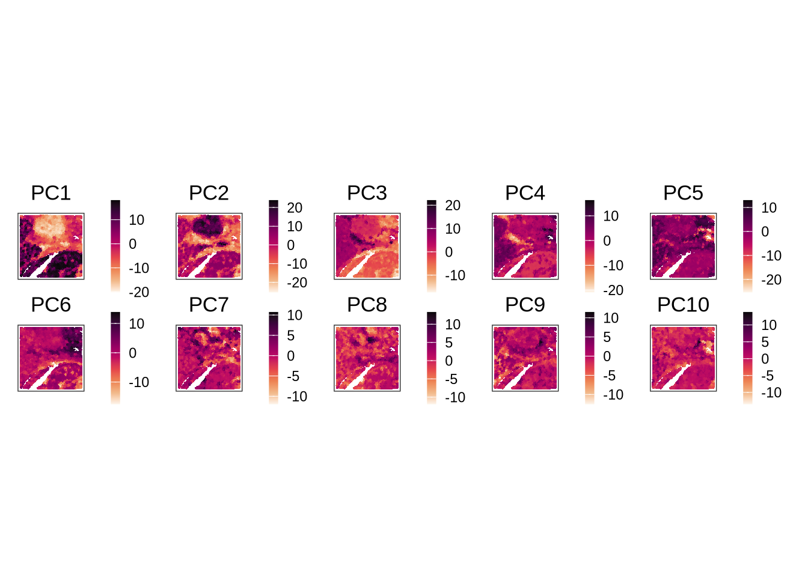
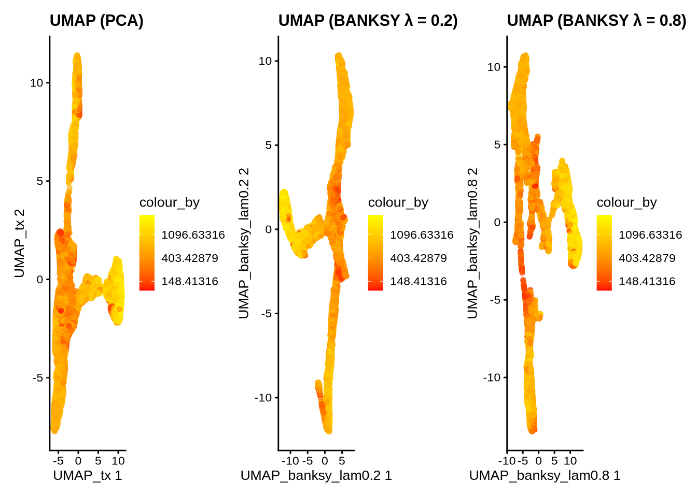

![]()
library(SpatialExperiment)
library(scran)
library(scater)
library(ggplot2)
library(patchwork)
library(bluster)
library(escheR)
library(pheatmap)
library(HDF5Array)
library(ggspavis)
library(nnSVG)
library(Banksy)
library(igraph)
library(SpaNorm)
library(dplyr)
library(purrr)3. Intermediate Processing
Load packages
Load Data
visium_data_path <- file.path(data_path, "raw_colon_cancer")
hdf_data_path <- file.path(data_path, "hdf5_colon_cancer")spe <- loadHDF5SummarizedExperiment(
dir = hdf_data_path,
prefix = "02_qc_"
)Normalization
Log1p normalization
One of the most popular normalization methods for spatial transcriptomics data is log-normalization (log1p) like single-cell RNA-seq data. Here, we use scuttle::logNormCounts() function to perform log-normalization.
spe <- logNormCounts(spe)Log normalized counts are stored in the “logcounts” assay of the spe object.
head(logcounts(spe))<6 x 12615> sparse DelayedMatrix object of type "double":
s_016um_00144_00175-1 ... s_016um_00109_00223-1
SAMD11 0 . 0
NOC2L 0 . 0
KLHL17 0 . 0
PLEKHN1 0 . 0
PERM1 0 . 0
HES4 0 . 0After log-normalization, we can inspect the computed size factors, which are used to account for differences in sequencing depth across spots.
colData(spe)$sizeFactors <- sizeFactors(spe)
plotVisium(spe, annotate = "sizeFactors", zoom = TRUE, point_shape = 22, point_size = 2.5)
We can observe spatial patterns in the size factors, indicating that some regions of the tissue have higher sequencing depth than others.
Spatially-aware normalization using SpaNorm
Since spatial transcriptomics data often exhibit spatially correlated technical variations, spatially-unaware normalization methods may confound biological signals with technical artifacts. To address this issue, we can apply SpaNorm, a spatially-aware normalization method.
SpaNorm takes not only gene expression data but also spatial coordinates as inputs. It computes spatially smooth functions to represent the gene- and spot-specific size factors.
We create a new object for SpaNorm normalization to compare the results with log-normalization.
spe.spanorm <- loadHDF5SummarizedExperiment(
dir = hdf_data_path,
prefix = "02_qc_"
)Before applying SpaNorm, we filter out lowly expressed genes to improve computational efficiency. Here, we retain genes that are expressed in at least 5% of the spots.
keepGenes <- filterGenes(spe, 0.05)
spe.spanorm <- spe.spanorm[keepGenes, ]Then, we perform SpaNorm normalization.
spe.spanorm <- SpaNorm(spe.spanorm, verbose = FALSE)We calculate the estimated size factors from the SpaNorm normalized data using SpaNorm::fastSizeFactors().
spe.spanorm <- fastSizeFactors(spe.spanorm)We visualize the estimated size factors from SpaNorm normalization and compare them with those from log-normalization.
p1 <-
plotVisium(
spe,
annotate = "sizeFactors",
zoom = TRUE,
point_shape = 22,
point_size = 2.5
) + ggtitle("Log1p Normalization")
p2 <-
plotVisium(
spe.spanorm,
annotate = "sizeFactor",
zoom = TRUE,
point_shape = 22,
point_size = 2.5
) + ggtitle("SpaNorm Normalization")
p1 + p2
Overall, the size factors estimated from SpaNorm normalization are comparable to those from log-normalization. For the rest of the analysis, we will proceed with the log-normalized data stored in the spe object.
Feature Selection
As in scRNA-seq analysis, selecting the most informative genes is a crucial step in spatial transcriptomics data analysis.
Highly Variable Genes (HVGs)
The simplest way to achieve this is by selecting highly variable genes (HVGs) based on their mean-variance relationship, as in single-cell RNA-seq analysis. Here, we use the scran::modelGeneVarByPoisson() function to fit a mean-variance trend to the log-normalized counts and identify HVGs.
# Fits a mean-variance trend to the log-normalized counts.
dec <- modelGeneVarByPoisson(spe)
# Sort genes by biological component of variance
dec <- dec[order(dec$bio, decreasing = T), ]
# Visualize the mean-variance trend
plot(dec$mean, dec$total,
xlab = "Mean expression (log-counts)",
ylab = "Total variance (log-counts)",
main = "Mean-Variance Trend"
)
curve(metadata(dec)$trend(x), add = TRUE, col = "dodgerblue", lwd = 2)
We select the top 6 HVGs for visualization. We exclude mitochondrial genes as these genes tend to not provide much biological insight.
is.mito <- rownames(spe)[grepl("^MT-", rownames(spe))]
top_HVG <- row.names(dec[!row.names(dec) %in% is.mito, ])[1:6]
# Create a plot for each gene in top_HVG
ps <- lapply(
top_HVG,
\(.) {
plotCoords(spe,
annotate = .,
assay_name = "logcounts")
}
) # use "logcounts" assay to visualise log normalised counts
# figure arrangement and change colors
patchwork::wrap_plots(ps, nrow = 2) &
theme(legend.key.width = unit(0.4, "lines"),
legend.key.height = unit(0.8, "lines")) &
scale_color_gradientn(colors = rev(hcl.colors(9, "Rocket")))
We can appreciate the spatial expression patterns of these HVGs across the tissue section. IGKC and IGHG1 are plasma cell and B cell markers, indicating the presence of immune cells in the tumor microenvironment. COL3A1 and COL1A1 are stromal cell markers, and OLFM4 and PIGR are epithelial cell markers.
For downstream analysis, we select the top 1,000 HVGs. We remove mitochondrial genes from the selected HVGs.
dec <- dec[!row.names(dec) %in% is.mito, ]
hvg <- getTopHVGs(dec, n = 1000)
rowData(spe)$hvg <- rowData(spe)$Symbol %in% hvg
dec[hvg, ]$bio |> summary() Min. 1st Qu. Median Mean 3rd Qu. Max.
0.01620 0.02085 0.02889 0.07314 0.05140 4.55358 Spatially Variable Genes (SVGs)
One limitation of HVG-based feature selection is the lack of spatial information. To address this, many methods have been developed to identify spatially variable genes (SVGs) that exhibit spatially patterned expression across the tissue section. Examples of such methods are nnSVG and DESpace, which will be covered in another post.
Dimensionality Reduction
After normalization and feature selection, we perform dimensionality reduction to capture the major sources of variation in the data. We will explore both non-spatially aware and spatially aware dimensionality reduction methods.
PCA (Non-spatially aware dimensionality reduction)
Similar to scRNA-seq data, we can perform PCA on the log-normalized expressions of the HVGs using scater::runPCA() function.
# Run PCA on the log-normalized counts of the HVGs
spe <- runPCA(spe, ncomponents = 30, subset_row = rowData(spe)$hvg)We can plot the scree plot to visualize the proportion of variance explained by each principal component (PC).
# Visualize the explained variance by each principal component.
# This helps in determining how many PCs capture most of the variance.
plot(attr(reducedDim(spe, "PCA"), "percentVar"),
xlab = "PC", ylab = "Proportion of variance explained",
main = "PCA Scree Plot"
)
We choose the first 10 PCs based on the scree plot.
# Run PCA on the log-normalized counts of the HVGs using the top PCs, for example 10 PCs
spe <- runPCA(spe, ncomponents = 10, subset_row = rowData(spe)$hvg)
# Get the PCA results
pcs <- reducedDim(spe, "PCA")
# Visualize PCs on the tissue slice coordinates
ps <- lapply(
colnames(pcs),
\(.) {
spe[[.]] <- pcs[, .]
plotCoords(spe, annotate = .)
}
)
# Arrange the plots and customize colors
patchwork::wrap_plots(ps, nrow = 2) &
theme(legend.key.width = unit(0.4, "lines"),
legend.key.height = unit(0.8, "lines")) &
scale_color_gradientn(colors = rev(hcl.colors(9, "Rocket")))
We can check top genes contributing to each PC by examining the loadings.
top_genes_tbl <- map_dfc(
set_names(paste0("PC", 1:10)),
~ attributes(reducedDims(spe)[["PCA"]])$rotation[, .x] |>
abs() |>
sort(decreasing = TRUE) |>
names() |>
head(10)
)
top_genes_tbl# A tibble: 10 × 10
PC1 PC2 PC3 PC4 PC5 PC6 PC7 PC8 PC9 PC10
<chr> <chr> <chr> <chr> <chr> <chr> <chr> <chr> <chr> <chr>
1 OLFM4 COL3A1 IGKC TAGLN IGKC C3 LYZ COL3A1 EGR1 IGHG1
2 IGKC CXCR4 PIGR IGKC PIGR TMSB10 CD74 SELENOP FOS JCHAIN
3 COL3A1 IGKC MUC12 COL1A1 IGHG1 MMP2 FTL COL1A1 FTH1 IGKC
4 VIM COL1A1 IGHG1 A2M MUC12 GREM1 TAGLN FTH1 JUNB IGHA1
5 COL1A2 CD74 FCGBP DES JCHAIN VIM ACTB LYZ MCL1 C3
6 COL1A1 COL1A2 MUC2 COL3A1 FCGBP PECAM1 DES SPARC C3 IGFBP5
7 PIGR TXNIP JCHAIN IGHG1 MUC2 IGFBP7 CTSB CD74 OLFM4 IGHM
8 TSPAN8 OLFM4 SPINK4 MMP2 CD74 LYZ PECAM1 FOS ACTB CCL19
9 MMP2 TRBC2 ITM2C MYH11 SPINK4 CD74 VIM ZFP36 MMP2 TMSB10
10 MUC12 MMP2 PLA2G2A COL1A2 TMSB10 DES VWF PTGDS NR4A1 DCN BANKSY (Spatially-aware dimensionality reduction)
BANKSY is a recently developed framework for spatially aware analysis of spatial transcriptomics data. Its core innovation is the neighbor-augmented expression matrix, which integrates three complementary sources of information: each spot’s intrinsic gene expression, the mean expression of its local neighborhood, and the magnitude of expression gradients within that neighborhood. The contribution of spatial context is governed by a tunable parameter, λ (ranging from 0 to 1). When λ = 0, BANKSY is equivalent to standard PCA only using intrinsic gene expression data, whereas increasing λ progressively amplifies the influence of spatial information.

We will run spatially-aware dimensionality reduction using BANKSY on the log-normalized expressions of the HVGs. We will test two values for the lambda parameter: 0.2 and 0.8.
# Parameters for BANKSY
k <- 20 # number of nearest neighbors for constructing the spatial graph
l <- c(0.2, 0.8) # lambda values to test
a <- "logcounts" # assay to use
xy <- c("array_row", "array_col") # spatial coordinate names
# Construct neighbor-augmented expression matrix using the HVGs only
set.seed(142857)
tmp <- computeBanksy(spe[rowData(spe)$hvg, ],
assay_name=a,
coord_names=xy,
k_geom=k,
parallel=T,
num_cores=4)
# Run PCA on a BANKSY matrix for each lambda value
for (lambda in l) {
tmp <- runBanksyPCA(tmp, lambda=lambda, npcs=10)
reducedDim(spe, paste0("PCA_banksy_lam", lambda)) <- reducedDim(tmp, paste0("PCA_M0_lam", lambda))
}We can visualize the PCs obtained from BANKSY with λ = 0.8.
## Visualize PCs on the tissue slice coordinates
pcs <- reducedDim(spe, "PCA_banksy_lam0.8")
ps <- lapply(colnames(pcs), \(.) {
spe[[.]] <- pcs[, .]
plotCoords(spe, annotate = .)
})
patchwork::wrap_plots(ps, nrow = 2) &
theme(legend.key.width = unit(0.4, "lines"),
legend.key.height = unit(0.8, "lines")) &
scale_color_gradientn(colors = rev(hcl.colors(9, "Rocket")))
We also visualize the PCs for λ = 0.2.
UMAP
For visualization, we run UMAP on the PCs obtained from both standard PCA and BANKSY.
# UMAP
spe <- runUMAP(spe, dimred="PCA", name="UMAP_tx")
spe <- runUMAP(spe, dimred="PCA_banksy_lam0.2", name="UMAP_banksy_lam0.2")
spe <- runUMAP(spe, dimred="PCA_banksy_lam0.8", name="UMAP_banksy_lam0.8")p1 <- plotReducedDim(spe, dimred = "UMAP_tx", colour_by = "detected") +
scale_colour_gradient(trans = "log", high = "yellow", low = "red") +
labs(title = "UMAP (PCA)")
p2 <- plotReducedDim(spe, dimred = "UMAP_banksy_lam0.2", colour_by = "detected") +
scale_colour_gradient(trans = "log", high = "yellow", low = "red") +
labs(title = "UMAP (BANKSY λ = 0.2)")
p3 <- plotReducedDim(spe, dimred = "UMAP_banksy_lam0.8", colour_by = "detected") +
scale_colour_gradient(trans = "log", high = "yellow", low = "red") +
labs(title = "UMAP (BANKSY λ = 0.8)")
p1 + p2 + p3
Save the processed data
saveHDF5SummarizedExperiment(
spe,
dir = hdf_data_path,
prefix = "03_processed_",
replace = TRUE,
chunkdim = NULL,
level = NULL,
as.sparse = NA,
verbose = NA
)
Expand for Session Info
sessionInfo()R version 4.5.2 (2025-10-31)
Platform: x86_64-conda-linux-gnu
Running under: Ubuntu 22.04.4 LTS
Matrix products: default
BLAS/LAPACK: /home/kim/workspace/spatial_transcriptomics/.pixi/envs/default/lib/libopenblasp-r0.3.30.so; LAPACK version 3.12.0
locale:
[1] LC_CTYPE=en_US.UTF-8 LC_NUMERIC=C
[3] LC_TIME=de_CH.UTF-8 LC_COLLATE=en_US.UTF-8
[5] LC_MONETARY=de_CH.UTF-8 LC_MESSAGES=en_US.UTF-8
[7] LC_PAPER=de_CH.UTF-8 LC_NAME=C
[9] LC_ADDRESS=C LC_TELEPHONE=C
[11] LC_MEASUREMENT=de_CH.UTF-8 LC_IDENTIFICATION=C
time zone: Europe/Zurich
tzcode source: system (glibc)
attached base packages:
[1] stats4 stats graphics grDevices utils datasets methods
[8] base
other attached packages:
[1] purrr_1.1.0 dplyr_1.1.4
[3] SpaNorm_1.4.0 igraph_2.2.1
[5] Banksy_1.6.0 nnSVG_1.14.0
[7] ggspavis_1.16.0 HDF5Array_1.38.0
[9] h5mread_1.2.0 rhdf5_2.54.0
[11] DelayedArray_0.36.0 SparseArray_1.10.0
[13] S4Arrays_1.10.0 abind_1.4-8
[15] Matrix_1.7-3 pheatmap_1.0.13
[17] escheR_1.10.0 bluster_1.20.0
[19] patchwork_1.3.2 scater_1.38.0
[21] ggplot2_4.0.0 scran_1.38.0
[23] scuttle_1.20.0 SpatialExperiment_1.20.0
[25] SingleCellExperiment_1.32.0 SummarizedExperiment_1.40.0
[27] Biobase_2.70.0 GenomicRanges_1.62.0
[29] Seqinfo_1.0.0 IRanges_2.44.0
[31] S4Vectors_0.48.0 BiocGenerics_0.56.0
[33] generics_0.1.4 MatrixGenerics_1.22.0
[35] matrixStats_1.5.0
loaded via a namespace (and not attached):
[1] pbapply_1.7-4 gridExtra_2.3 rlang_1.1.6
[4] magrittr_2.0.4 RcppAnnoy_0.0.22 compiler_4.5.2
[7] sccore_1.0.6 vctrs_0.6.5 pkgconfig_2.0.3
[10] rdist_0.0.5 fastmap_1.2.0 magick_2.9.0
[13] XVector_0.50.0 labeling_0.4.3 utf8_1.2.6
[16] BRISC_1.0.6 rmarkdown_2.30 ggbeeswarm_0.7.2
[19] xfun_0.53 beachmat_2.26.0 jsonlite_2.0.0
[22] rhdf5filters_1.22.0 Rhdf5lib_1.32.0 BiocParallel_1.44.0
[25] irlba_2.3.5.1 parallel_4.5.2 aricode_1.0.3
[28] cluster_2.1.8.1 R6_2.6.1 RColorBrewer_1.1-3
[31] limma_3.66.0 leidenAlg_1.1.5 Rcpp_1.1.0
[34] knitr_1.50 splines_4.5.2 tidyselect_1.2.1
[37] dichromat_2.0-0.1 yaml_2.3.10 viridis_0.6.5
[40] codetools_0.2-20 lattice_0.22-7 tibble_3.3.0
[43] withr_3.0.2 S7_0.2.0 evaluate_1.0.5
[46] mclust_6.1.1 pillar_1.11.1 dbscan_1.2.3
[49] scales_1.4.0 glue_1.8.0 metapod_1.18.0
[52] tools_4.5.2 data.table_1.17.8 BiocNeighbors_2.4.0
[55] ScaledMatrix_1.18.0 locfit_1.5-9.12 ggside_0.4.0
[58] RANN_2.6.2 cowplot_1.2.0 grid_4.5.2
[61] edgeR_4.8.0 RcppHungarian_0.3 beeswarm_0.4.0
[64] BiocSingular_1.26.0 vipor_0.4.7 cli_3.6.5
[67] rsvd_1.0.5 viridisLite_0.4.2 uwot_0.2.3
[70] gtable_0.3.6 digest_0.6.37 ggrepel_0.9.6
[73] dqrng_0.4.1 rjson_0.2.23 htmlwidgets_1.6.4
[76] farver_2.1.2 htmltools_0.5.8.1 lifecycle_1.0.4
[79] statmod_1.5.1 Citation
BibTeX citation:
@online{kim2025,
author = {Kim, Youngjun},
title = {Spatial {Transcriptomics} {Data} {Analysis} {Tutorial} 03:
{Intermediate} {Processing}},
date = {2025-12-20},
url = {https://yjkim93.github.io/posts/2025-12-20-spatial-transcriptomics-03-processing/},
langid = {en}
}
For attribution, please cite this work as:
Kim, Youngjun. 2025. “Spatial Transcriptomics Data Analysis
Tutorial 03: Intermediate Processing.” December 20, 2025. https://yjkim93.github.io/posts/2025-12-20-spatial-transcriptomics-03-processing/.